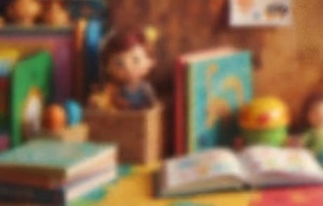
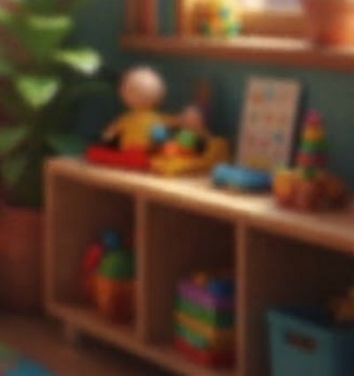
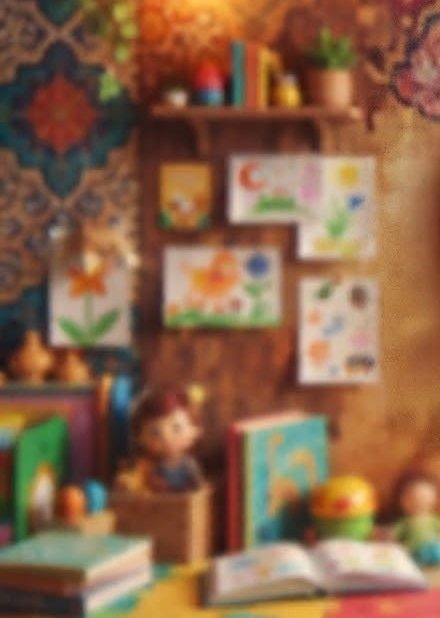
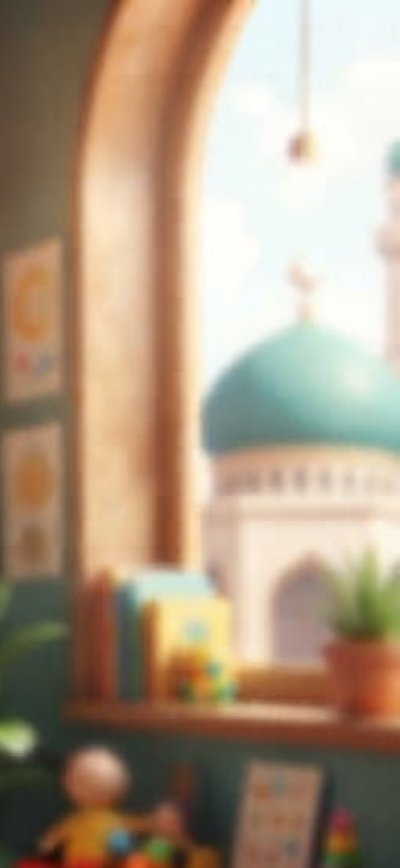

Our Programs
Fun and Learning Together
From first steps to school days, a nurturing program for every stage of childhood.
Choose a Program
Four programs, one caring family
Each program is designed around how children grow, with plenty of play, care and wonder along the way.
Infant Program
Seedlings
Infants · 6–18 months
Our infant room is a calm, cozy space where babies feel secure and deeply loved. Educators follow each baby’s own feeding and sleeping routines, just like at home, and fill the day with cuddles, songs, gentle play and discovery.
- Individual feeding and nap routines that follow home
- Sensory play, tummy time and early movement
- Songs, rhymes and first words in English and Arabic
- Daily updates on meals, naps, diapers and milestones


Toddler Program
Sprouts
Toddlers · 18 months – 2.5 years
Toddlers are busy discovering the world and themselves. Our Sprouts program turns that energy into play that builds language, independence and early friendships, with lots of patience and encouragement.
- Language-rich play, picture books and music
- Self-help skills: handwashing, dressing and toilet learning
- Messy art, sand, water and sensory exploration
- Daily outdoor play and plenty of movement
Preschool Program
Saplings
Preschool · 2.5–4 years
Our preschoolers learn through hands-on projects, meaningful play and lots of big questions. We build the skills and confidence children need for kindergarten, and a lifelong love of learning.
- Early literacy: letters, sounds and storytelling
- Numbers, patterns, puzzles and problem-solving
- Science, nature and hands-on discovery
- Arabic letters, short surahs, duas and good manners


School Age Program
Branches
School Age · 4–12 years
A welcoming space for school-age children to unwind, connect with friends and keep growing before and after school, plus full days of fun and learning when school is out.
- Before and after school care
- Homework time and reading support
- Clubs for art, sports, cooking and Arabic
- Full-day programs on PA days, holidays and summer break

Every Day at Aflah
Learning through every moment
Across all of our programs, children enjoy a rich mix of experiences that build the whole child: mind, body, heart and character.
Arabic & Islamic values
Arabic letters and words, short surahs, everyday duas, stories of the Prophets and lots of adab.
Literacy & numeracy
Stories, songs, letters, counting and patterns that build a strong foundation for school.
Art, music & movement
Painting, building, singing and dancing that let every child express themselves.
Outdoor & nature play
Fresh air every day: running, climbing, gardening and exploring the natural world.
Science & discovery
Hands-on experiments and big questions that spark curiosity and problem-solving.
Healthy halal meals
Nutritious meals and snacks, shared family-style to build healthy habits and table manners.
A Day at Aflah
Our daily rhythm
A predictable routine helps children feel safe, confident and ready to learn. Here’s a typical day in our preschool room.
- Arrival, breakfast and free play
- Morning circle: greetings, dua and Arabic word of the day
- Learning centres: literacy, numbers, art and science
- Healthy morning snack
- Outdoor play and nature exploration
- Lunch together
- Rest and quiet time
- Afternoon snack
- Stories, songs and Arabic
- Outdoor play and clubs
- Quiet activities and home time
Times are approximate and vary by program. Infants always follow their own feeding and sleep routines.
Find the right program for your child
Talk to us about your child’s age, needs and schedule, and we’ll help you choose the best fit.